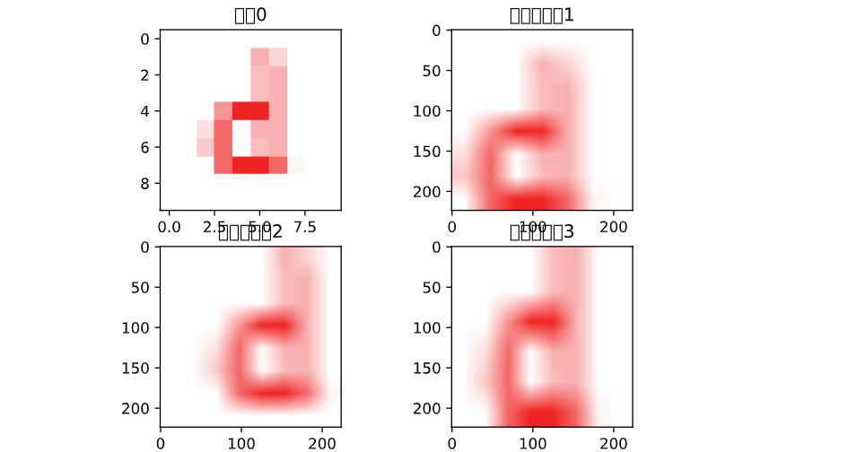
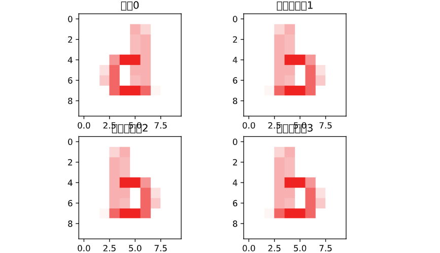
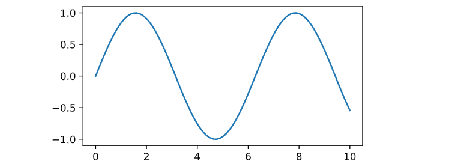
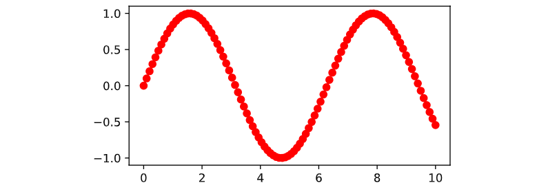
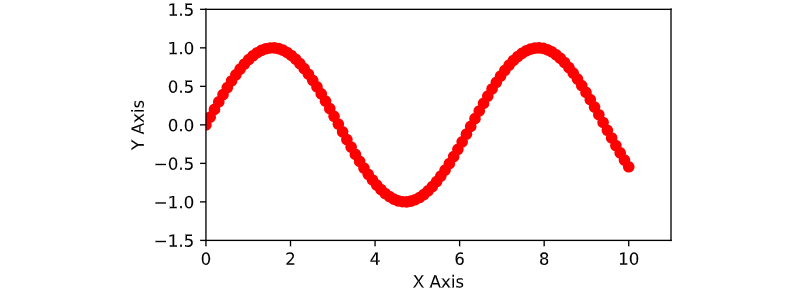
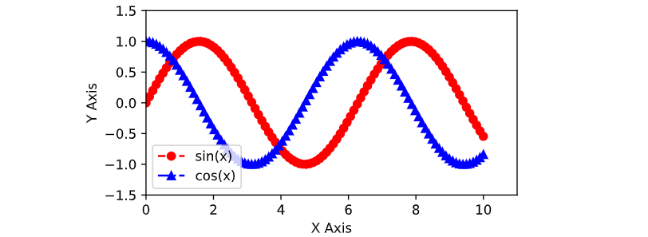
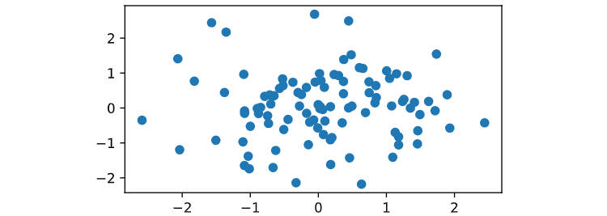

CONTENT OUTLINE
关于Python学习，每遇未知即记录！
〇、目录
Pytorch常用的包：
torch：张量的有关运算。如创建、索引、链接、转置、加减乘除、切片等torch.Storage：跟绝大部分基于连续存储的数据结构有关torch.nn：包含搭建神经网络层的模块和一系列loss函数。如全连接、卷积、BN批处理、dropout、crossentryloss、mseloss等；torch.nn.function：常用的激活函数relu、leaky_relu、sigmoid等torch.optim：各种参数优化方法，例如SGW、AdaGrad、Adam、RMSProp等torch.autogard：提供tensor所有操作的自动求导方法torch.utils.data：用于加载数据。torchvision：是pytorch中专门用来处理图像的库。包中常用的模块有torchvision.datasets：用来进行数据加载的Torchvision.models：为我们提供已经训练好的模型，让我们加载之后可以直接使用。包括AlexNet、VGG、ResNet等网络模型Torchvision.transforms：为我们提供了一般的图像转换操作类Torchvision.utils：将给定的tensor保存成image文件
from PIL import Image：pytorch中处理图像使用的这几种格式- PIL：使用python自带图像处理库读取出来的图片格式。
- Numpy：使用python-onpenCV库读取出来的图片格式
- Tensor：pytorch中训练是所采用的向量格式（也可以说是图片）。
而 from PIL import Image是在进行PIL与tensor的转换，也就是图片格式的转换
matplotlib：这是pytorch的一个绘图库，是python中常用的可视化工具之一，可以方便创建2D图标和一些基本的3D图表。基本的方法有 ：plt.figure():调用figure创建一个绘图对象Plt.plot：调用plot函数在当前的绘图对象中绘图Plt.xlable()/plt.ylable：设置x/y轴的文字Plt.title()：设置图标的标题Plt.xlim()/plt.ylim()：设置变量的范围，[格式为x/y的起点，终点]Plt.axis()：同时设置两个变量的范围，格式为[x的起点，x的终点，y的起点，y的终点]Plt.legend()：显示label中标记的图示Plt.show()：以上参数设置完成后，必须使用该方法显示出创建的所有绘图对象
一、Torch
包 torch 包含了多维张量的数据结构以及基于其上的多种数学操作。另外，它也提供了多种工具，其中一些可以更有效地对张量和任意类型进行序列化。
它有CUDA 的对应实现，可以在NVIDIA GPU上进行张量运算(计算能力>=2.0)。
1 张量Tensors
1.1 torch.numel
1 | torch.numel(input)->int |
返回input 张量中的元素个数
- 参数: input (Tensor) – 输入张量
1 | a = torch.randn(1,2,3,4,5) |
1.2 torch.is_tensor
1 | torch.is_tensor(obj) |
如果obj 是一个pytorch张量，则返回True
- 参数： obj (Object) – 判断对象
2 创建操作 Creation Ops
2.1 torch.arange
1 | torch.arange(start, end, step=1, out=None) → Tensor |
返回一个1维张量，长度为 floor((end−start)/step)。包含从start到end，以step为步长的一组序列值(默认步长为1)。
参数:
- start (float) – 序列的起始点
- end (float) – 序列的终止点
- step (float) – 相邻点的间隔大小
- out (Tensor, optional) – 结果张量
例子：
1 | torch.arange(1, 4) |
2.2 torch.ones
1 | torch.ones(*sizes, out=None) → Tensor |
返回一个全为1 的张量，形状由可变参数sizes定义。
参数:
- sizes (int…) – 整数序列，定义了输出形状
- out (Tensor, optional) – 结果张量 例子:
1 | >>> torch.ones(2, 3) |
2.3 torch.zeros
1 | torch.zeros(*sizes, out=None) → Tensor |
返回一个全为标量 0 的张量，形状由可变参数sizes 定义。
参数:
- sizes (int…) – 整数序列，定义了输出形状
- out (Tensor, optional) – 结果张量
从 0.4 开始，此函数不支持
out关键字。作为替代方案，旧的torch.zeros_like(input, out=output)等效于torch.zeros(input.size(), out=output)。
1 | input = torch.empty(2, 3) |
3 随机抽样 Random sampling
3.1 torch.normal()
1 | torch.normal(means, std, out=None) |
返回一个张量，包含从给定参数means,std的离散正态分布中抽取随机数。 均值means是一个张量，包含每个输出元素相关的正态分布的均值。 std是一个张量，包含每个输出元素相关的正态分布的标准差。 均值和标准差的形状不须匹配，但每个张量的元素个数须相同。
参数:
- means (Tensor) – 均值
- std (Tensor) – 标准差【沐神说的是方差，有出入，待补充】
- out (Tensor) – 可选的输出张量
已用例子中，【见线性回归的从零实现】
2
w = torch.normal(0, 0.01, size=(2, 1), requires_grad=True)
4 数学操作Math operations
4.1 Pointwise Ops【逐点操作】
4.1.1 torch.mul
pytorch中两个张量的乘法可以分为两种：
- 两个张量对应元素相乘，在
PyTorch中可以通过torch.mul函数（或*运算符）实现；- 两个张量矩阵相乘，在
PyTorch中可以通过torch.matmul函数实现；
torch.matmul(input, other) → Tensor：计算两个张量input和other的矩阵乘积【注意】：matmul函数没有强制规定维度和大小，可以用利用广播机制进行不同维度的相乘操作。
torch.matmul()也是一种类似于矩阵相乘操作的tensor连乘操作。但是它可以利用python中的广播机制，处理一些维度不同的tensor结构进行相乘操作。这也是该函数与torch.bmm()区别所在。
1 | torch.mul(input, value, out=None) |
用标量值value乘以输入input的每个元素，并返回一个新的结果张量。 out=tensor∗value
如果输入是FloatTensor or DoubleTensor类型，则value 必须为实数，否则须为整数。【译注：似乎并非如此，无关输入类型，value取整数、实数皆可。】
参数：
- input (Tensor) – 输入张量
- value (Number) – 乘到每个元素的数
- out (Tensor, optional) – 输出张量
两张量相乘
两个张量input,other按元素进行相乘，并返回到输出张量。即计算outi=inputi∗otheri
两计算张量形状不须匹配，但总元素数须一致。 注意：当形状不匹配时，input的形状作为输入张量的形状。
参数：
- input (Tensor) – 第一个相乘张量
- other (Tensor) – 第二个相乘张量
- out (Tensor, optional) – 结果张量
例子：
1 | a = torch.randn(4,4) |
4.1.2 torch.cos
1 | torch.cos(input, out=None) → Tensor |
返回一个新张量，包含输入input张量每个元素的余弦。
参数：
- input (Tensor) – 输入张量
- out (Tensor, optional) – 输出张量
4.1.3 torch.div()
1 | torch.div(input, value, out=None) |
将input逐元素除以标量值value，并返回结果到输出张量out。 即 out=tensor/value
如果输入是FloatTensor or DoubleTensor类型，则参数 value 必须为实数，否则须为整数。【译注：似乎并非如此，无关输入类型，value取整数、实数皆可。】
参数：
- input (Tensor) – 输入张量
- value (Number) – 除数
- out (Tensor, optional) – 输出张量
对于两张量相除
1 | torch.div(input, other, out=None) |
两张量input和other逐元素相除，并将结果返回到输出。即， outi=inputi/otheri
两张量形状不须匹配，但元素数须一致。
注意：当形状不匹配时，input的形状作为输出张量的形状。
参数：
- input (Tensor) – 张量(分子)
- other (Tensor) – 张量(分母)
- out (Tensor, optional) – 输出张量
例子：
1 | a = torch.randn(4,4) |
4.2 Reduction Ops
4.2.1 torch.norm()
【L2范数】
||x||2= 对向量每个元素的平方求和，再开根号
1 | torch.norm(input, p=2) → float |
返回输入张量input 的p 范数。
参数：
- input (Tensor) – 输入张量
- p (float,optional) – 范数计算中的幂指数值
1 | a = torch.randn(1, 3) |
4.2.2 torch.mean
1 | torch.mean(input) → float |
返回输入张量所有元素的均值。
参数： input (Tensor) – 输入张量
例子：
1 | a = torch.randn(1, 3) |
返回输入张量给定维度dim上每行的均值。
输出形状与输入相同，除了给定维度上为1.
参数：
- input (Tensor) – 输入张量
- dim (int) – the dimension to reduce
- out (Tensor, optional) – 结果张量
例子：
1 | a = torch.randn(4, 4) |
5 比较操作 Comparison Ops
5.1 torch.max
1 | #D |
返回输入张量所有元素的最大值。
参数:
- input (Tensor) – 输入张量
例子：
1 | a = torch.randn(1, 3) |
1 | torch.max(input, dim, max=None, max_indices=None) -> (Tensor, LongTensor) |
返回输入张量给定维度上每行的最大值，并同时返回每个最大值的位置索引。
输出形状中，将dim维设定为1，其它与输入形状保持一致。
参数:
- input (Tensor) – 输入张量
- dim (int) – 指定的维度
- max (Tensor, optional) – 结果张量，包含给定维度上的最大值
- max_indices (LongTensor, optional) – 结果张量，包含给定维度上每个最大值的位置索引
例子：
1 | >> a = torch.randn(4, 4) |
返回输入张量给定维度上每行的最大值，并同时返回每个最大值的位置索引。 即，outi=max(inputi,otheri)
输出形状中，将dim维设定为1，其它与输入形状保持一致。
参数:
- input (Tensor) – 输入张量
- other (Tensor) – 输出张量
- out (Tensor, optional) – 结果张量
例子：
1 | >>> a = torch.randn(4) |
6 序列化 Serialization
6.1 torch.saves[source]
1 | torch.save(obj, f, pickle_module=<module 'pickle' from '/home/jenkins/miniconda/lib/python3.5/pickle.py'>, pickle_protocol=2) |
保存一个对象到一个硬盘文件上 参考: Recommended approach for saving a model 参数：
- obj – 保存对象
- f － 类文件对象 (返回文件描述符)或一个保存文件名的字符串
- pickle_module – 用于pickling元数据和对象的模块
- pickle_protocol – 指定pickle protocal 可以覆盖默认参数
6.2 torch.load[source]
1 | torch.load(f, map_location=None, pickle_module=<module 'pickle' from '/home/jenkins/miniconda/lib/python3.5/pickle.py'>) |
从磁盘文件中读取一个通过torch.save()保存的对象。 torch.load() 可通过参数map_location 动态地进行内存重映射，使其能从不动设备中读取文件。一般调用时，需两个参数: storage 和 location tag. 返回不同地址中的storage，或着返回None (此时地址可以通过默认方法进行解析). 如果这个参数是字典的话，意味着其是从文件的地址标记到当前系统的地址标记的映射。 默认情况下， location tags中 “cpu”对应host tensors，‘cuda:device_id’ (e.g. ‘cuda:2’) 对应cuda tensors。 用户可以通过register_package进行扩展，使用自己定义的标记和反序列化方法。
参数:
- f – 类文件对象 (返回文件描述符)或一个保存文件名的字符串
- map_location – 一个函数或字典规定如何remap存储位置
- pickle_module – 用于unpickling元数据和对象的模块 (必须匹配序列化文件时的pickle_module )
例子:
1 | torch.load('tensors.pt') |
7 索引 切片 连接 换位…
7.1 torch.stack
1 | torch.stack(sequence, dim=0) |
沿着一个新维度对输入张量序列进行连接。 序列中所有的张量都应该为相同形状。
参数:
- sqequence (Sequence) – 待连接的张量序列
- dim (int) – 插入的维度。必须介于 0 与 待连接的张量序列数之间。
二、Torch.Storage
torch.Storage 跟绝大部分基于连续存储的数据结构类似，本质上是一个单一数据类型的一维连续数组(array)。
每一个 torch.Tensor 都有一个与之相对应的torch.Storage对象，两者存储数据的数据类型(data type)保持一致。
1 | class torch.FloatStorage |
1、基本操作
byte()
将此存储转为byte类型
char()
将此存储转为char类型
clone()
返回此存储的一个副本
2、特别指出
2.1 类型转换
type(new_type=None, async=False)
将此对象转为指定类型。
如果已经是正确类型，不会执行复制操作，直接返回原对象。
参数：
- new_type (type or string) -需要转成的类型
- async (bool) -如果值为True，且源在锁定内存中而目标在GPU中——或正好相反，则复制操作相对于宿主异步执行。否则此参数不起效果。
三、Torch.nn
nn是Neural Network的简称，是专门为神经网络设计的模块化接口，帮助便于执行如下的与神经网络相关的行为：
创建神经网络
训练神经网络
保存神经网络
恢复神经网络
nn构建与autograd之上，可以用来定义和运行神经网络：
- nn.Parameter
- nn.Linear
- nn.functional
- nn.Module
- nn.Sequential
1、nn.Parameter
torch.nn.Parameter是继承自torch.Tensor的子类，其主要作用是作为nn.Module中的可训练参数使用。
它与torch.Tensor的区别就是nn.Parameter会自动被认为是module的可训练参数，即加入到parameter()这个迭代器中去；而module中非nn.Parameter()的普通tensor是不在parameter中的。
注意到，nn.Parameter的对象的requires_grad属性的默认值是True，即是可被训练的，这与torch.Tensor对象的默认值相反。在nn.Module类中，Pytorch也是使用nn.Parameter来对每一个module的参数进行初始化的。
1.1 nn.Parameter概述
Parameter实际上也是Tensor，也就是说是一个多维矩阵，是Variable类中的一个特殊类。
当我们创建一个model时，nn会自动创建相应的参数parameter，并会自动累加到模型的Parameter 成员列表中。
Parameters VS buffers
- 一种是反向传播需要被
optimizer更新的，我们称之为parameter
self.register_parameter("param", param)self.param = nn.Parameter(torch.randn(1))- 一种是反向传播不需要被
optimizer更新的，我们称之为buffer
self.register_buffer("my_buffer", torch.randn(1))
1.2 单个全连接层中参数的个数
in_features的数量，决定了参数的个数：Y = WX + b。其中，X的维度就是in_features，X的维度决定的W的维度， 总的参数个数 = in_features + 1
out_features的数量，决定了全连接层中神经元的个数，因为每个神经元只有一个输出。有多少个输出，就需要多少个神经元。
总的
W参数的个数 =in_features * out_features总的
b参数的个数 =1 * out_features总的参数
（W/B）的个数 =(in_features + 1) * out_features
1.3 使用参数创建全连接层代码案例
1 | # nn.functional.linear( ) |
2、nn.Linear
3、nn.functional
在PyTorch中，还有一个库为nn.functional，同样也提供了很多网络层与函数功能，但与nn.Module不同的是，利用nn.functional定义的网络层不可自动学习参数，还需要使用nn.Parameter封装。
nn.functional的设计初衷是对于一些不需要学习参数的层，如激活函数层、BN(Batch Normalization)层，可以使用nn.functional，这样这些层就不需要在nn.Module中定义了
3.1 概述
nn.functional
- 包含
torch.nn库所有函数，包含大量Loss和Activation function- 如
torch.nn.functional.conv2d(...)
- 如
nn.functional.XX是函数接口nn.functional.XX无法与nn.Sequential结合使用- 没有学习参数的【损失函数、激活函数等】根据个人选择使用
nn.functional.XX或nn.XX - 需要特别注意
dropout层
分类：包括神经网络前向和后向处理所需要到的常见函数。
- 神经元处理函数
- 激活函数
3.2 激活函数
3.2.1 relu案例
1 | # nn.functional.relu( ) |
3.2.2 sigmoid
1 | # nn.functional.sigmoid( ) |
3.3 nn.xxx和nn.functional.xxx比较
4、nn.Module
5、nn.Sequential
nn.Sequential【继承自nn.Module类】是一个有序的容器，该类将按照传入构造器的顺序，依次创建相应的函数，并记录在Sequential类对象的数据结构中，同时以神经网络模块为元素的有序字典也可以作为传入参数。
因此，Sequential可以看成是有多个函数运算对象，串联成的神经网络，其返回的是Module类型的神经网络对象。
5.1 以列表的形式，串联函数运算，构建串行执行的神经网络
1 | print("利用系统提供的神经网络模型类：Sequential,以参数列表的方式来实例化神经网络模型对象") |
输出：
1 | 利用系统提供的神经网络模型类：Sequential,以参数列表的方式来实例化神经网络模型对象 |
5.2 以字典的形式，串联函数运算，构建串行执行的神经网络
1 | # Example of using Sequential with OrderedDict |
输出：
1 | 利用系统提供的神经网络模型类：Sequential,以字典的方式来实例化神经网络模型对象 |
5.3 举例
1 | # Example of using Sequential |
四、Torch.optim
五、Torch.autogard
六、Torch.utils
七、torchvision
torchvision是pytorch的一个图形库，它服务于PyTorch深度学习框架的，主要用来构建计算机视觉模型。
torchvision的构成如下：
- torchvision.datasets: 一些加载数据的函数及常用的数据集接口；
- torchvision.models: 包含常用的模型结构（含预训练模型），例如AlexNet、VGG、ResNet等；
- torchvision.transforms: 常用的图片变换，例如裁剪、旋转等；
- torchvision.utils: 其他的一些有用的方法。
1、Torchvision.transforms 解析
1 | transforms.CenterCrop 对图片中心进行裁剪 |
常见操作：
class torchvision.transforms.CenterCrop(size) 将给定的
PIL.Image进行中心切割，得到给定的size，size可以是tuple，(target_height, target_width)。size也可以是一个Integer，在这种情况下，切出来的图片的形状是正方形。class torchvision.transforms.RandomCrop(size, padding=0) 切割中心点的位置随机选取。
size可以是tuple也可以是Integer。class torchvision.transforms.RandomHorizontalFlip 随机水平翻转给定的
PIL.Image，概率为0.5。即：一半的概率翻转，一半的概率不翻转。class torchvision.transforms.RandomSizedCrop(size, interpolation=2) 先将给定的
PIL.Image随机切，然后再resize成给定的size大小。class torchvision.transforms.Pad(padding, fill=0) 将给定的
PIL.Image的所有边用给定的pad value填充。【padding：要填充多少像素fill：用什么值填充】
举例：
1 | from torchvision import transforms |
1.1 transforms.Compose()类
这个类的主要作用是串联多个图片变换的操作。
这个类的构造很简单：
1 | class torchvision.transforms.Compose(transforms): |
事实上，Compose()类会将transforms列表里面的transform操作进行遍历。实现的代码很简单：
1 | ## 这里对源码进行了部分截取。 |
接下来举例说明transforms.Compose：
1 | transforms.Compose([transforms.RandomResizedCrop(224), |
具体是对图像进行各种转换操作，并用函数compose将这些转换操作组合起来；
先读取一张图片：
1 | from PIL import Image |
**transforms.RandomResizedCrop(224)**将给定图像随机裁剪为不同的大小和宽高比，然后缩放所裁剪得到的图像为制定的大小；（即先随机采集，然后对裁剪得到的图像缩放为同一大小），默认scale=(0.08, 1.0)
1 | print("原图大小：",img.size) |

该操作的含义在于：即使只是该物体的一部分，我们也认为这是该类物体
transforms.RandomHorizontalFlip()：以给定的概率随机水平旋转给定的PIL的图像，默认为0.5
1 | img = Image.open(r"C:\Users\Stell\Desktop\2.png") |

transforms.ToTensor() ：将给定图像转为Tensor
1 | img = Image.open(r"C:\Users\Stell\Desktop\2.png") |
transforms.Normalize(）：归一化处理
1 | img = Image.open(r"C:\Users\Stell\Desktop\2.png") |
1.2 transforms.Normalize(）
简单来说就是将数据按通道进行计算，将每一个通道的数据先计算出其方差与均值，然后再将其每一个通道内的每一个数据减去均值，再除以方差，得到归一化后的结果。
在深度学习图像处理中，标准化处理之后，可以使数据更好的响应激活函数，提高数据的表现力，减少梯度爆炸和梯度消失的出现，加快模型的收敛速度。
八、处理图像
九、matplotlib绘图库
9.1 基础用法
9.1.1 起步
plot函数是Python中一个非常常用的画图函数，通常用于绘制二维图形。它的最基础用法是传入一个列表或数组，plot函数会自动将这些数据点连接起来绘制成一条折线图。
1 | import matplotlib.pyplot as plt |

9.1.2 自定义颜色、线型和点型
除了默认的蓝色实线，plot函数还有很多自定义的参数可以使用。其中color、linestyle和marker分别控制线条的颜色、线型和点型。可以在函数调用时通过指定这些参数实现自定义。
1 | import matplotlib.pyplot as plt |

9.1.3 设置坐标轴范围和标签
除了线条和点的自定义，plot函数还可以通过设置xlim、ylim和xlabel、ylabel等来控制坐标轴的范围和标签。
1 | import matplotlib.pyplot as plt |

9.1.4 绘制多个图形
plot函数可以同时展示多个图形。只需要在调用函数时，将不同的数据和属性传入即可。
1 | import matplotlib.pyplot as plt |
在这个例子里，我们同时绘制了sin(x)和cos(x)的图像，并设置了图例。

9.1.5 其他用法
除了以上常用的基础用法之外，plot函数还有很多其他用法。比如绘制散点图、直方图、面积图等等。还可以使用subplot函数创建子图，使用plt.savefig函数保存图像等等。更多plot函数的用法可以参考官方文档。
以下是一个简单的例子，展现如何绘制散点图。
1 | import matplotlib.pyplot as plt |
在这个例子里，我们随机生成了100个点作为x轴和y轴的坐标，并用scatter函数将它们绘制成散点图。

9.2
X、Sundry
1、数据集下载 & 构建数据集
PyTorch领域库提供了一些预加载的数据集（如FashionMNIST），这些数据集是torch.utils.data.Dataset的子类，并实现特定数据的功能。它们可以被用来为你的模型制作原型和基准。你可以找到它们这里：Image Datasets、Text Datasets，和Audio Datasets